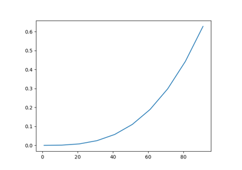

otfmi
Installation
API documentation
Examples
Applications
Sample FMU files
Sensitivity analysis with Persalys
otfmi
Examples
<no title>
Load an FMU
Load an FMU
Explore the FMU
Explore the FMU

Simulate an FMU
Simulate an FMU
Initialize an FMU with non-default values
Initialize an FMU with non-default values